AIGC在海报、场景图等项目中的运用¶
AIGC 全称 AI Generated Content，是利用人工智能技术来生成内容，AIGC 绘画属于AIGC的分支。
近半年，以 Midjourney 和 Stable Diffusion 为代表的 AIGC 绘画迎来爆发式发展，掀起了一场生产力革命。
Midjourney 和 Stable Diffusion 强大的创造力和无与伦比的高效性，使设计师通过它们提升生产力成为了必然。然而 Midjourney 和 Stable Diffusion 作为开放性工具，本身具有随机性与不可控性，很多设计师很难在工作中运用，仅沦为娱乐工具。
本篇文章基于网易 ASAK 设计团队实际运用案例，带你破除 AIGC 绘画工具的不可控性，让它们成为你设计路上披荆斩棘的神器。
通过 Midjourney 和 Stable Diffusion 已落地项目类型分类，全文大纲如下：
- 设计提效
- 活动弹窗设计
- 勋章图标设计
- IP 设计
- KV/海报设计
- 场景设计
- 动画分镜设计
- 物料设计
- 设计师后记
一、设计提效¶
当未使用 Midjourney 和 Stable Diffusion 时，通常设计师流程如下：
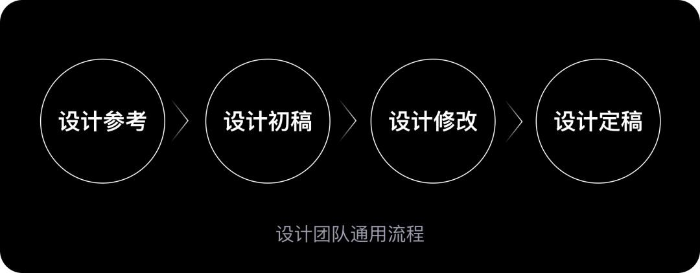
在设计参考阶段，设计师需要找大量的参考图，这一过程需要 0.5-1 天。设计师基于设计参考，完成设计初稿，这一过程至少需要 1 天。
而 Midjourney+Stable Diffusion 在整个设计流程中，可以极大地缩短概念风格、设计初稿和设计终稿的反复沟通时间。如下图所示：
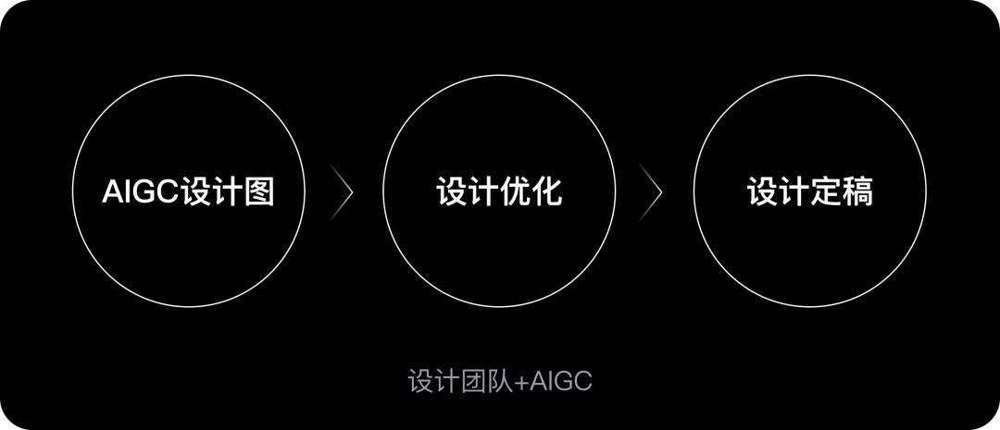
使用 Midjourney 或 Stable Diffusion 直接生成设计图，设计师再做细节优化。整个设计流程提升效率 25-55%。
二、活动弹窗设计¶
先运用 ChatGPT 获取弹窗的设计思路，从多角度切入设计，使设计方案更完善，如下图所示：
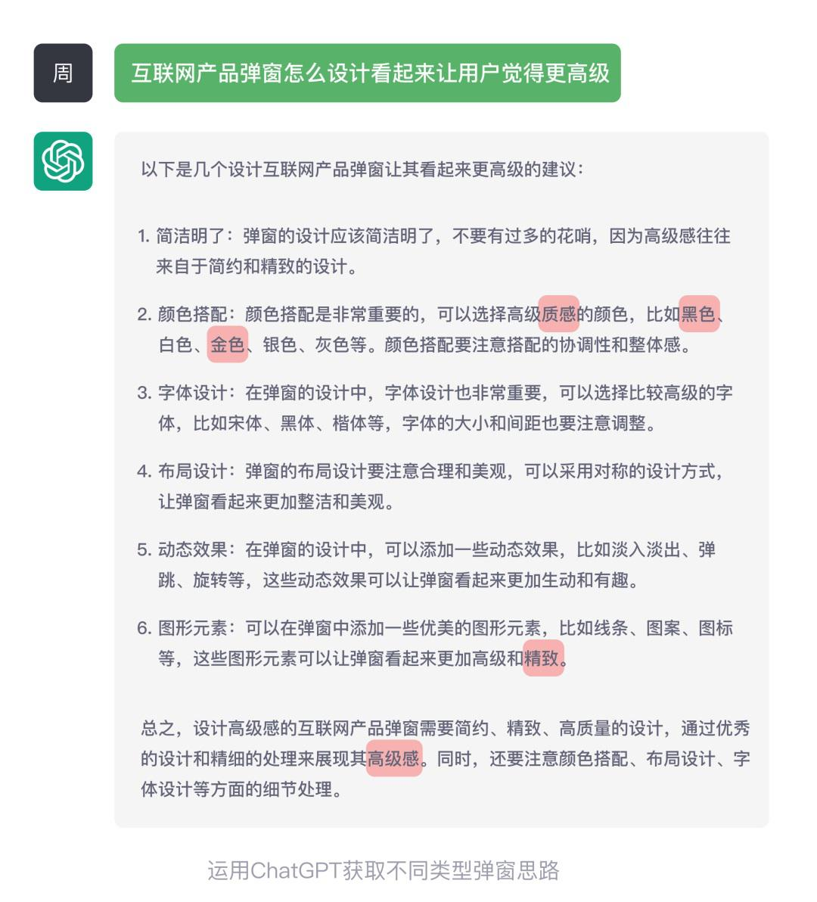
通过 ChatGPT 分析后，我们可以从中提取的关键词：黑金、高级感、精致、质感。
继续具象延伸，再添加宝石、荣耀感、坚硬感和钻石等关键词。为了让元素更加立体，可以带上 3D 和三维渲染器等相关关键词。
转化成对应的英文后，关键词如下：
Prompt: Shining gemstone, high class, noble sense, glory sense, 3D, hard, diamond, Octane Render
Negative prompt: Low saturation, deformity, sketch, blur
将初稿中的钻石图放进 Stable Diffusion 图生图功能。输入关键词，重复幅度调到 5 以下，反复多批量产出后筛选出想要的结果，如下图所示：
通过 Stable Diffusion 生成更有质感和高级感的设计主体元素，节省大量设计细节的时间。下图为初稿、AI 辅助和终稿:
¶
三、勋章图标设计
Midjourney 和 Stable Diffusion 也可以制作勋章图标。
勋章一般需要简化版和精细版，用于不同尺寸的使用场景。
以网易大神梦幻西游武神坛勋章为例，借助 Stable Diffusion，只需要输出简化版本的设计，让 Stable Diffusion 去深入刻画。
然后用生成最满意的图继续下一轮刻画，以达到最贴合自己需求的出图。
勋章自带荣誉感属性，因此可以从这个思路出发，得到宝石、金属质感、闪耀感和高级感等关键词。转化成对应的英文关键词如下：
Prompt: Metallic texture, Shining gemstone, high class, noble sense, glory sense, 3D, hard, diamond, Octane Render
Negative prompt: Low saturation, deformity, sketch, blur
输入对应的关键词后，得到设计图如下所示：
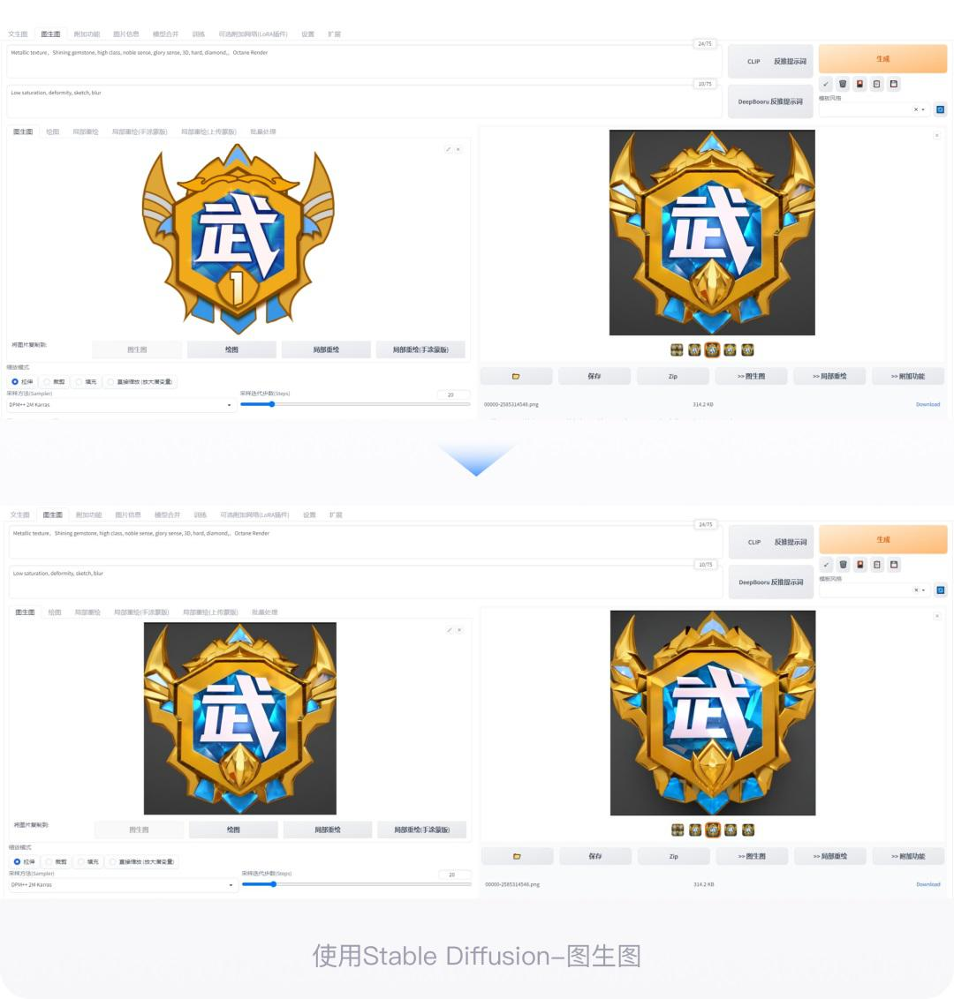
四、IP 设计¶
在设计 IP 前期，设计师需要先确定 IP 的应用场景，根据应用场景来确定 IP 的角色动作。
在这一阶段，设计师可以通过 Stable Diffusion 输入相关动作的关键词，来提取灵感参考。
以网易大神 IP 霸哥为例，讲解如何用 Stable Diffusion 制作 IP 素材。
下图 1 是设计师手绘草稿，下图 2 是最终 Stable Diffusion 完成的 IP。
第 1 步：绘制角色动作线稿
确定好角色动作后，开始给角色绘制草图线稿。我们给霸哥设定的动作是单手持玩具枪，眼神坚毅地望向前方。如下图所示：

注意：草图线稿最好较为干净连贯，以免 AI 识别不完整，导致输出的图片出错（示例图的草稿还是有些随意，建议自己做的时候再精细一点）。
第 2 步：选择并下载合适模型以及插件
这一阶段，我们需要结合 IP 形象的特点，有针对性地选择模型和插件。
考虑到霸哥形象整体呈圆形，风格偏可爱，抓住角色的这些特点，我们可以去到 C 站（civita）上选择相对应的模型。
我们选择的大模型是：MeinaMix；Lora 插件是：blindbox。（模型选择不是唯一的，有感觉适合的也可以尝试使用。）
第 3 步：设置 controlnet 面板
在文生图界面，往下滑找到 ControlNet 这一栏（要先安装部署好 controlnet 插件），将绘制好的线稿草稿上传至相应位置。并将启用勾选上，如果线稿图片背景为白色，可以把反色模式也一起勾选。
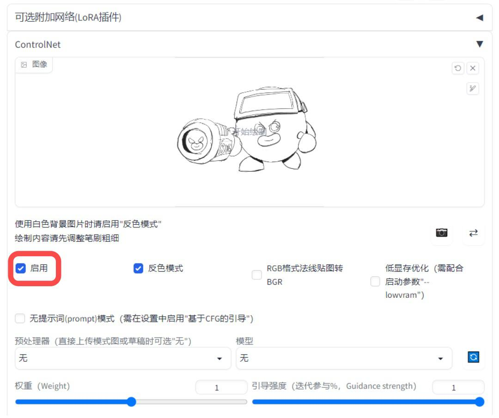
接着在下方的预处理器和模型上，选择好 canny（边缘检测）以及 control_any3_canny [95070f75]模型。
有时候模型显示不出来可以点击旁边的刷新按钮，刷新一下就有了，这一步非常重要，切记不要忘记设置！否则输出的模型会与线稿没什么关联。
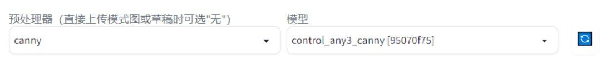
设置好后，其余的参数可以不动，也可以根据自己的需求做调整。
第 4 步：输入关键词并设置参数
关键词如下图所示：
Prompt：(masterpiece),(best quality),(ultra-detailed), black body, thick red lips, The body is a black ball with thin arms, wearing white gloves on its hands It has round black eyes, and short legs with red shoes, Wearing a display screen on the head, Holding a toy gun in its hand
Negative prompt：(worst quality, low quality, medium quality:1.4), low-res, (bad_prompt_version2:0.7), easy negative, bad-hands-5, red hands, white shoes, EasyNegative, text, blob
身体的颜色，手脚的颜色和嘴巴特征主要描述了霸哥的形象特征。
采样方法（Sampler）上，因为我们想做的是三维模型，所以选择偏写实风格的 DPM++2M Karras（该采样方法不唯一）。其余参数没有特定要求，可根据输出的图片效果灵活调整。
第 5 步：产出图片/后期调整
前期出图可能效果会有些偏差，这时候可以灵活调整一些参数，并多生成几次。挑选出最接近霸哥形态的图片进行后期处理即可。下图为其中一个生成示意图：
五、KV/海报设计¶
1. KV 设计
在设计前期，设计师希望得到的画面是：预言家在中心操控着魔法球，两边的魔法狼群围绕着她，然后中心散发光芒，头发飞舞为画面的核心。
其中风格关键词：暗黑风，神秘，狼人，夜晚，哥特。
结合 chatpgt 转化成故事描述，获得精准关键词。
按照 Midjonrney 的语言描述：客观描述+风格。
其中客观描述如下：
A beautiful seer is holding a glowing magic ball in the center of the picture, with orange-red hair fluttering around her, surrounded by a group of transparent blue magic wolf heads
插画风格如下：
Illustration, Drawing, Hand-Drawn, Isometric, Saturated, Split-Complementary-Colors, 2-Dimensional, Rays of Shimmering Light
使用 Midjonrney v5 输入关键词后，不断调试后得到如下图所示：
上述图片风格非平面插画类，那么继续优化关键词，这次加入关键词：Graphic illustration（平面插画）重新放在 Midjonrney 里面，并且把引擎模型改成 niji 得到如下图：
将上述 AI 生成的图，给业务方评估风格，这样需求方可以更清晰直观地感觉后续设计风格，有利于提出更有建议性的意见。最后设计师从气氛、构图和整体细节进行调整。完成线稿后，基于线稿快速实现设计终稿。
下图 1 为线稿，下图 2 为最终稿：
如果没有 Midjourney 的话，那么设计师至少需要出一版设计初稿给业务方，业务方根据设计初稿提修改意见。
有了 Midjourney，可以快速实现脑海画面，拥有更多更快试错机会。
在这个流程中 Midjourney 承担着设计初稿的执行角色。
2. 海报设计
设计团队接到狼人杀游戏赛事的 3 张倒计时天数海报。
需求风格：暗黑哥特漫画风格手绘。
业务方希望设计交付时间为 3-4 天。然而一张纯手绘的时间需要 2 天（三张则是 6 天），时间完全不够，所以需要借助 AIGC 来提高效率，做到准时交付。
接到需求后，设计开始了前期提案。先用 Midjourney 完成我们的设计表达，让需求方更清晰直观地感觉到设计稿的风格感。
我们以倒计时还有 1 天的海报为例。
第 1 步：实现脑海画面
海报构思画面：狼人变身，一条光柱表示 1 的形式。关键词如下：
A transformed beam of light soars into the sky, amazing Abigail Larson style, Illustration, Hand-Drawn, Macro, Depth of Field, Dichromatism, 2-Dimensional --iw 0.5 --s 1000 --ar 9:16
画面重点关键词：光柱

虽然上述生成效果图不太完美，但可以让需求方更清晰直观地感觉到设计稿的方向。
第 2 步：根据已确认方向，背景图制作
因为古堡和大月亮构图已较为常见，所以我们直接用 Midjourney 进行基础的背景绘制，关键词如下：
Abigail Larson, an original painting of a scene, a broken village in the middle of the night, a white full moon in the night sky, clouds and mist around the moon, dark blue background --ar 2:4
画面重点关键词：古堡，月亮。
第 3 步：最终细化绘制，完成作品
从生成图中挑选数张，选取每一张突出的地方进行合成、重制笔触和添加细节后，得到如下图所示的背景图：
最后加上狼人和光束变身特效后，进行简单排版就完成了终稿。
倒计时还有 2 天和 3 天运用类似上文 kv 设计思路，最终三张交付稿如下所示：

按照传统提案过程，需要寻找大量参考，然后合成拼凑出一张接近效果的图，三张海报的提案需要大概 1.5 天。
现在使用 Midjourney 进行批量出图，写出对应的关键词，出来的效果非常接近最后呈现的感觉，0.5 天就能完成三张提案效果图。并且需求方能清楚了解到最后效果，更快做出审核。
三张手绘倒计时海报，在 Midjourney 辅助下，从 7 天左右的工作量缩减到 3-4 天，对于设计和质量都有较为正向的反馈，值得继续深入研究并在工作中推广。
六、场景设计¶
1. 倩女幽魂虚拟演播厅
以倩女幽魂演播厅概念图设计为例，讲解 Midjourney 是如何定向控制，生成设计师和业务方想要的设计稿。
倩女幽魂这次的太一斗魂坛，需求方想要的风格元素是唐朝建筑、墨子机关元素和整体以红色建筑为主。
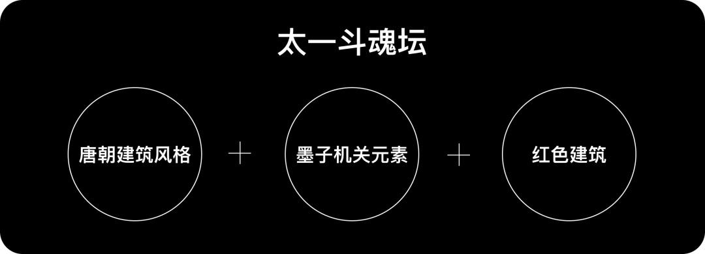
设计师开始尝试用 Midjourney 做前期框架搭建。
第 1 步：关键词生成概念图
开始以雄伟的中国式建筑和红色机关等关键词跑图。对应的关键描述如下：
Chinese palaces surround the central stage, there are mechanical gears on the building, Chinese style, red, Volume cloud, Volume light
然后调整关键词如下图所示：
Many red Chinese-style buildings surround the central stage, and there are mechanical gears on the buildings, clear structure, Volume cloud as background, Magnificent atmosphere, Unreal Engine 4
生成新的概念图如下图所示：
第 2 步：优化关键词
上述生成的概念图虽然有红色中国风建筑和机关元素，但擂台的感觉不够强烈，缺少建筑缠绕的感觉。
重新修改了关键词加入擂台和建筑环绕中心舞台等元素，关键词如下：
Many red Chinese-style buildings surround the central stage, and there are mechanical gears on the buildings, Clear structure, Volume cloud as background, Magnificent atmosphere, Unreal Engine4, --ar 16:9
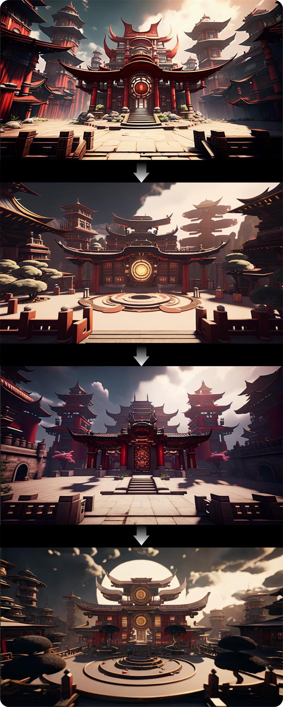
第 3 步：精选效果图合成初稿
上面几张概念图已经比较接近我们想要的效果。
最后设计师进行二次修改、合成和手绘后得到设计稿，如下图所示:
第 4 步：Midjourney 快速修改
需求方审核后，需要临时调整整个构图，画面改成悬空建筑擂台，空中需要漂浮的岩石，所以我们修改了关键词为悬空擂台、漂浮在空中的中国风建筑等。关键词如下：
A piece of Chinese architecture floating in the sky, the building is built on floating rocks, the center of the rock is a stage, and the buildings surround the stage --ar 16:9
这次改动如果不借助 Midjourney，我们就要大面积重新制作，而使用 Midjourney 来制作浮空岛的场景，只需要将我们之前合成好的建筑场景后期替换进去。
经过多张类似的推演，我们得到了一张适合通过后期手绘合成的图，做出的设计图如下所示：
设计稿经过需求方顺利通过后。交付给 AR 部门进行舞台搭建工作。
第 5 步：AR 虚拟搭建演播厅
AR 部门搭建演播厅的设计图，如下所示：
下图虚拟演播厅中的解说桌也是使用类似的 AI 辅助流程完成的制作：
2. AR 氛围概念参考
AR 技术在电竞赛事应用中已经相当普及，AR 即增强现实，为电竞提供了全新表现形式。
此次永劫无间赛事，由于场地空间的限制，设计师希望通过 AR 场景与舞台效果结合，让观众和用户有更好的观赛体验。
第 1 步：投喂风格图
用前期赛事 KV 草图和官方概念图投喂到 Midjourney 中，下图为投喂图：
第 2 步：生成场景图
配合关键词如下：
我们成功地生成了山林主题的场景概念图，如下图所示：
第 3 步：合成初步效果
结合赛事舞台设计制作的渲染图，如下所示：
将 Midjourney 生成的概念图与舞台设计制作的渲染图合成后，最终的舞台整体效果，如下：
第 4 步：三维建模和 UE 场景搭建
在上述基础上，进行三维模型制作以及 UE 场景搭建，形成最终的赛事场景效果图，如下图所示：
七、动画分镜设计¶
设计师手绘的动画分镜图，如下图所示：
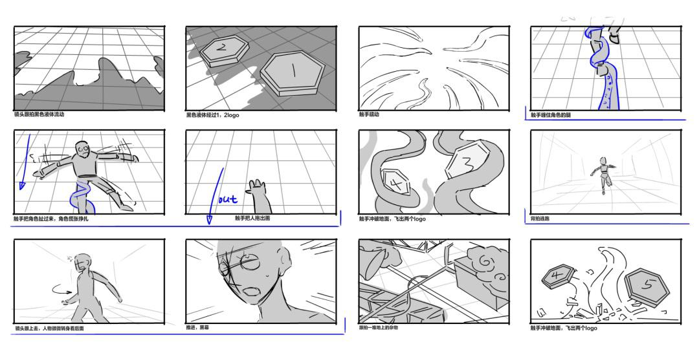
上述分镜较为简陋，尝试运用 Stable Diffusion 来进行上色优化。
第 1 步：优化 controlnet 可识别范围
根据已有手绘分镜，按照应用场景使用 controlnet 插件功能：seg（语意分割）和 canny（线稿）。这两个功能在脚本使用中频率较高。
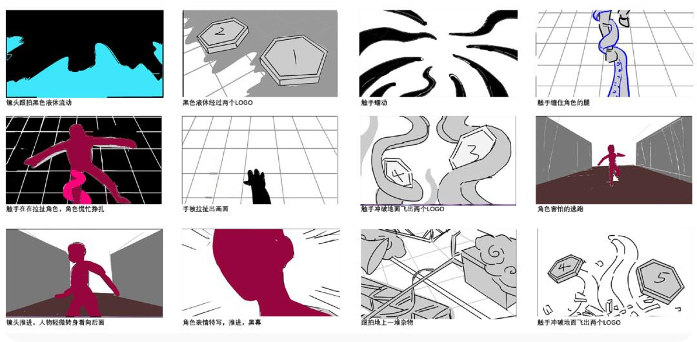
第 2 步：方式①使用controlnet的语意分割功能，实现画面分区
手绘分镜的 P1/P5/P9/P10 使用的是 seg 功能。通过在 Photoshop 中划分颜色来告诉 AI 这部分要的是什么物体。
以 P8 为例，两侧为墙壁 #787878，地面为地板#503232，中间为人物#96053e（可通过 ADE20K_classes 表格来获取色值信息）。
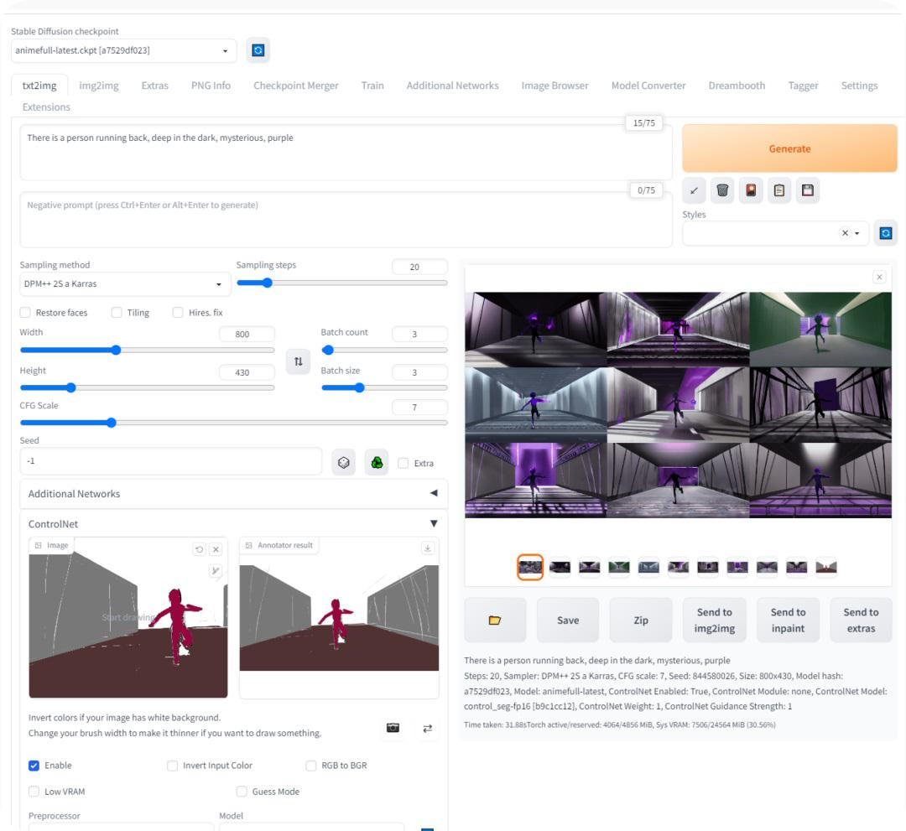
在手绘图上大概划分好颜色区域后添加到 Stable Diffusion 的 controlnet 中，因为我们在 Photoshop 中已经做了一些前期工作，所以就不用启用预处理模式，直接选择 seg 模型然后预处理。
开始添加 tag，我们拿到的脚本是角色慌张地逃跑，那么我们可以优化为“有一个在往前跑，黑暗深处，神秘，紫色等词来描述翻译后得到：There is a person running back, deep in the dark, mysterious, purple. Tag 交给 Stable Diffusion 来生成。
第 2 步：方式②应用controlnet的线稿功能，进行区域上色
以手绘 P12 为例，我们使用的是 canny（线稿）模式。直接把草图给到 controlnet，优化词为：紫色的章鱼触手从地面出来、碎石、破碎、两颗棋子。翻译后得到英文关键词如下：
Purple octopus tentacles come out of the ground, gravel, broken, two pawns
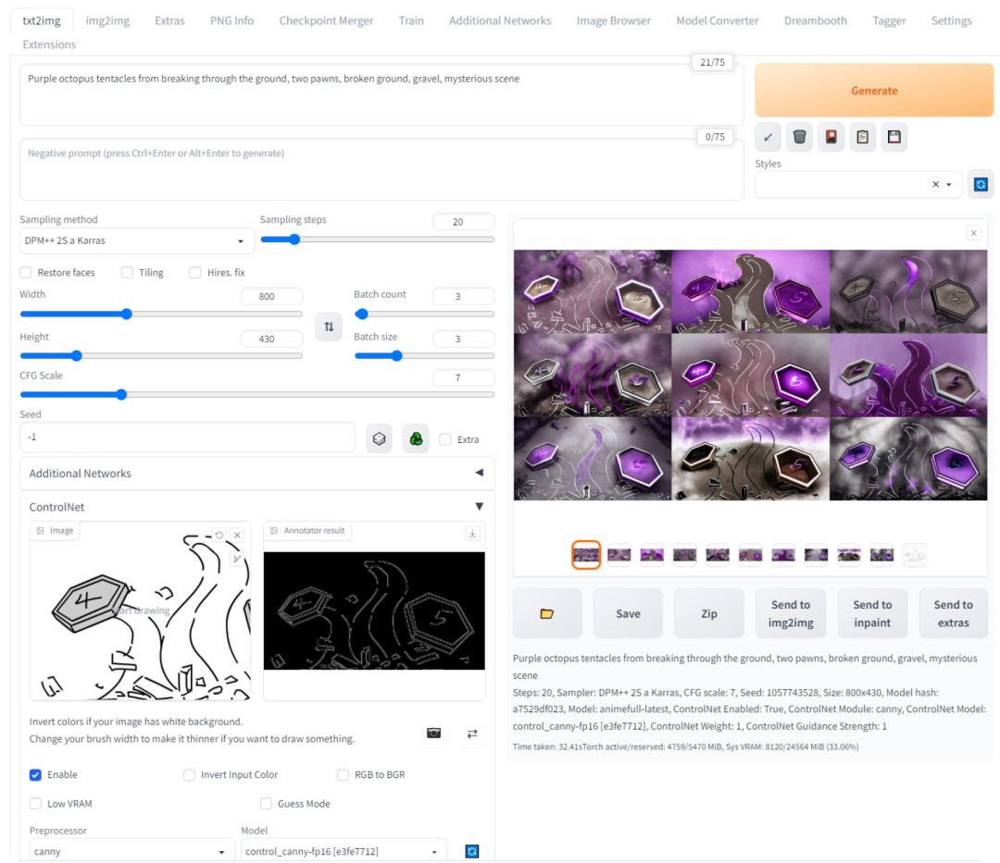
上图中的 P6 是符合我们的需求，将 P6 使用图生图中做二次细化，如下图所示：
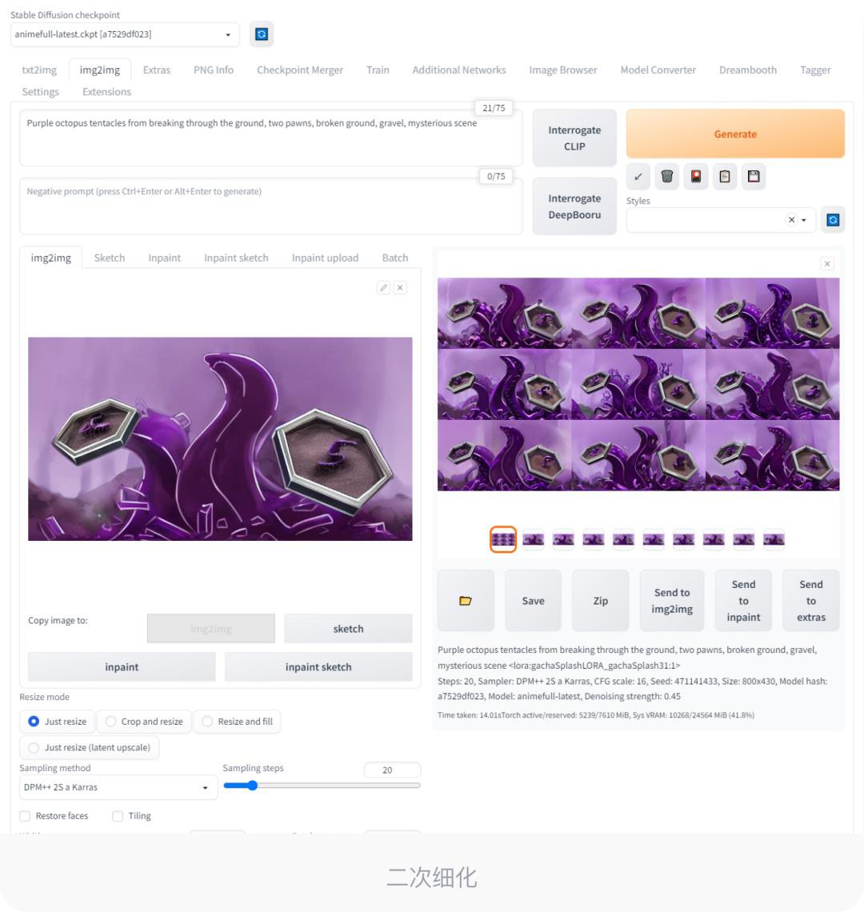
第 3 步：上色氛围分镜输出
运用 Stable Diffusion 来进行上色氛围，让需求方更直观地了解整个分镜效果，同时可以为后续视觉静态稿提供氛围参考。
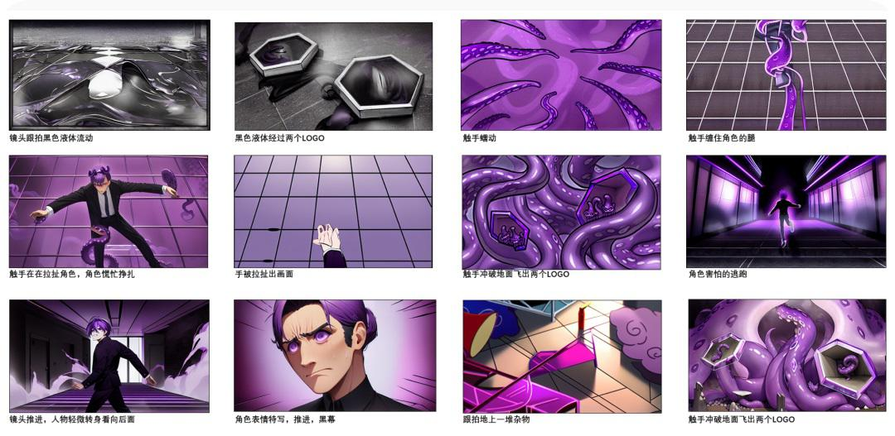
八、物料设计¶
游戏赛事中的奖杯是设计需求中不可或缺的一环。设计师可以利用 Midjourney 和 Stable Diffusion 进行大量的前期素材储备。
以下是需求之外，完成对赛事奖杯的素材储备。
第 1 步：使用 Midjourney 生成灵感素材
下图是使用 Midjourney 生成的各种奖杯概念图。
第 2 步：绘制草图
根据 Midjourney 生成的概念图，设计师手绘生成奖品草图。
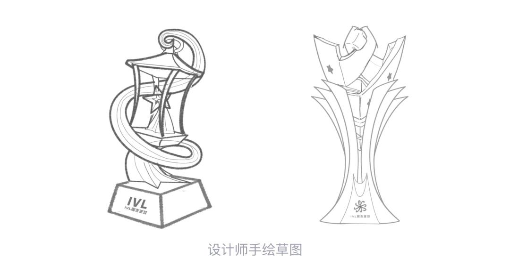
第 3 步：Stable Diffusion 二次创作
根据草图，使用 Stable Diffusion 精准控制上色，完成最终的奖杯素材，如下图所示：
这些储备可以为后期其他设计项目提供素材，进一步提升设计效率。
九、设计师后记¶
Midjourney 和 Stable Diffusion 的崛起，导致很多设计师焦虑，担心被取代。通过上面的案例可以看出 Midjourney 和 Stable Diffusion 只能完成项目中的一部分，无法做到独立完成项目，都需要设计师二次创作。
早期 UI 设计师的工具是 Photoshop。后面出现高效的 Sketch。到如今设计师使用更高效的协同工具 Figma。
而 AIGC 本质上还是提效辅助工具，需要设计师去掌握更高超的操作技能。
决定设计的成败从来是人，而不是工具。
凡本网注明"来源：XXX "的文/图/视频等稿件，本网转载出于传递更多信息之目的，并不意味着赞同其观点或证实其内容的真实性。如涉及作品内容、版权和其它问题，请与本网联系，我们将在第一时间删除内容！
作者:
来源： https://www.uisdc.com/aigc-in-asak